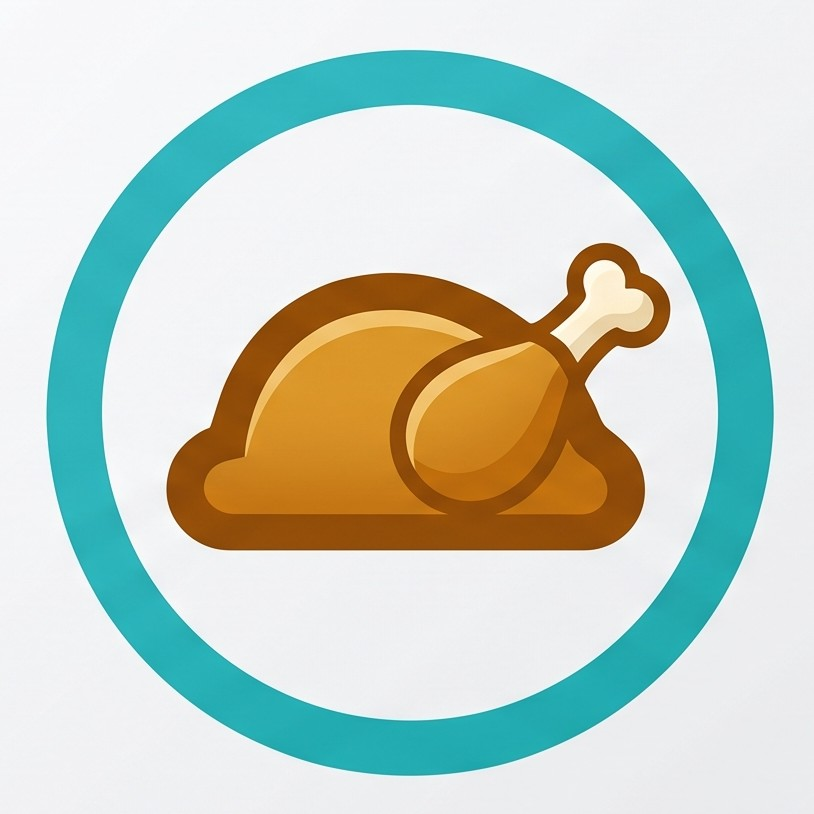

Nota: è possibile aggiungere altre rosticcerie ma devono avere un menu che cambia giornalmente e che viene pubblicato su un sito web, oppure nei post di Facebook

Sabato 12 settembre
by Mazzarisi
Nota: è possibile aggiungere altre rosticcerie ma devono avere un menu che cambia giornalmente e che viene pubblicato su un sito web, oppure nei post di Facebook